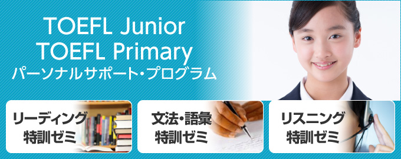
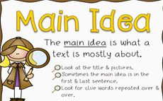
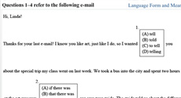
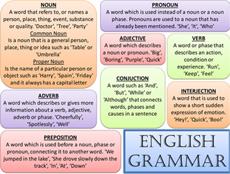

TOEFL Junior コース について はこちらからどうぞ
TOEFL Junior® Master コース について はこちらからどうぞ
TOEFL Primary 対策コース について はこちらからどうぞ
＜レッスンコース案内＞
▮初回のみ「講師への連絡」から英字表記をお伝えください。2回目以降は受講歴から順番に進めていきます。「TOEFL Juniorコース」 、「TOEFL Junior Masterコース」どちらのコースから始めても構いません。レベル分けされた「TOEFL Junior Masterコース」から始めて、時間に余裕があれば「TOEFL Juniorコース」で必要な科目を受講することをお勧めします。
【TOEFL Junior コース】
▮TOEFL Junior リーディング (英字：TOEFL Reading Comprehension)
●最大レッスン数：129レッスン（必要な分だけ受講してください）
▮TOEFL Junior 文法・語彙 (英字：TOEFL Junior Language Form and Meaning)
●最大レッスン数：50レッスン（必要な分だけ受講してください）
▮TOEFL Junior リスニング (英字：TOEFL Junior Listening Comprehension)
●最大レッスン数：38レッスン（必要な分だけ受講してください）
【TOEFL Junior Master コース】
▮Basic 最大レッスン数：100レッスン（必要な分だけ受講してください）
▮Intermediate 最大レッスン数：100レッスン（必要な分だけ受講してください）
▮Advanced 最大レッスン数：100レッスン（必要な分だけ受講してください）
【TOEFL Primary コース】
▮Step 1 Book 1 最大レッスン数：30レッスン（必要な分だけ受講してください）
▮Step 1 Book 2 最大レッスン数：30レッスン（必要な分だけ受講してください）
▮Step 1 Book 3 最大レッスン数：30レッスン（必要な分だけ受講してください）
▮Step 2 Book 1 最大レッスン数：30レッスン（必要な分だけ受講してください）
▮Step 2 Book 2 最大レッスン数：30レッスン（必要な分だけ受講してください）
▮Step 2 Book 3 最大レッスン数：30レッスン（必要な分だけ受講してください）
教材の取り扱い注意
◆教材はレッスン毎に講師からPDFで渡されます.
◆予習で必要な場合は、レッスンの最後に講師から受け取り下さい（複数回分でも可）
リーディング Reading Comprehension
テスト内容
リーディングセクションでは、中高生が学校生活で使用する幅広いリーディングスキルが測定されます。
| 文章の題材・内容 | 日常的なポスターやメモ、メール、図表、新聞・雑誌の記事から、また自然科学、社会科学、人文科学、芸術などアカデミックな文章から出題されます。 |
|---|---|
| 設問タイプ | 「文章の要旨」「主要な詳細情報」「書き手が情報を提示している理由」「はっきりと述べられていないことから推測する」「使用頻度の少ない単語や表現の意味を文脈から判断する」能力を測定します。さらに、 「間接的な表現の意図」「 強く暗示されている考えや事実」「代名詞と指示の対象となっている語句」「重要な意味を含むフレーズを文脈から理解する」ことも求められます。 |
マイチューターでは、試験が求める読解力を確実にアップするためのレッスンをご用意いたしました。
レッスンの詳細
- リーディング Reading Comprehension 全129レッスン
-
カリキュラムの前半はBasic 「設問タイプ別」と「語彙」を中心に91レッスンになります、後半がAdvance「題材別」と「語彙」を中心に文章量、難易度が上級者向けに38レッスン作られています。Basic レッスン１から順番に受講してください。「語彙」レッスンはリーディングセクションだけでなく「Language Form and Meaning」セクションの得点アップが期待できます。
設問タイプ別 レッスン
（例：文章の要旨をつかむ） 「文章の要旨」「主要な詳細情報」「書き手が情報を提示している理由」「はっきりと述べられていないことから推測する」「使用頻度の少ない単語や表現の意味を文脈から判断する」「間接的な表現の意図」「強く暗示されている考えや事実」「代名詞と指示の対象となっている語句」「重要な意味を含むフレーズを文脈から理解する」など主要な設問タイプを学びます。
内容・題材別 レッスン
（例：ポスターやメール）日常的な告示、ポスターやメモ、メール、図表、新聞・雑誌の記事から、また自然科学、社会科学、人文科学、芸術などアカデミックな文章を学びます。
「語彙」レッスン
リーディングセクションの問題を解くために必要な語彙の意味、語法、同意語、言い換え、時制、文章の構成、文章で使われている曖昧な表現の意味、イディオムなど徹底的に練習します。リーディングセクションだけでなく、「文法・語彙セクション」の力が養えます。
文法・語彙 Language Form and Meaning
テスト内容
文法・語彙セクションでは、英語を正確に理解し、英語で効果的にコミュニケーションをとるために必要な文法と語彙の知識を、間接的に測定します。
| 文章の題材・内容 | 文章は、短いノンアカデミックの文章、または長いアカデミックな文章のいづれかです。Eメール、お知らせ、解説文など、中学・高校生が学校生活で普段目にする可能性の高い文章です。 |
|---|---|
| 設問タイプ | 語法・文法と、語彙・ボキャブラリーの２つのタイプがあります。文法的に正しいセンテンスを完成させるために、適切な内容や構造を識別する。単語の意味に基づいて正しい単語を選ぶ問題です。 |
マイチューターでは、実践出題形式の練習問題を解答するだけでなく、解答に必要な文法・語彙の基礎練習を例題を使いながら丁寧に解説します。最後に確認テストをつけて習熟度を確認できるようにしました。
レッスンの詳細
- 文法・語彙 Language Form and Meaning 全50レッスン
-
実践出題形式の練習問題を解答するだけでなく、解答に必要な文法・語彙の基礎練習を例題を使いながら丁寧に解説します。最後に確認テストをつけて習熟度を確認できるようにしました。
1レッスン（25分）に含まれるレッスン内容
1. 出題形式を使った実践練習
 ●手紙、メール、エッセー、雑誌、記事、伝記など、アカデミック、ノンアカデミックな文章から出題
●文法的に正しい文章を完成させるために、正しい単語を選ぶ、適切な内容や構造を識別する。
●文法知識のみでなく、文脈から正しい言葉を判断し、適切に発信する
2. 解答に必要な文法・語彙の基礎練習
 ●問題の選択肢から解答を選んだ理由について説明してもらいます。
●解答に必要な文法・語彙の基礎知識を丁寧に解説します。
●問題の重要な文法・語彙を例文を使ってしっかり身に付けます。
3. 確認テスト
●最後に確認テストで習熟度を確認します。
●確認テストは、センテンスの並び替え、正し単語・センテンスの選択、などの問題タイプになります。
リスニング Listening Comprehension
テスト内容
リスニングセクションでは、個人の会話からアカデミックなテーマの授業まで、幅広い題材から出題されます。英語圏の中学校・高校で学校生活を送る上で必要なリスニングスキルを測定します。
| 文章の題材・内容 | 日常会話などノンアカデミックなカテゴリーと、自然科学、人文化学、社会科学、芸術などアカデミックなカテゴリーにおける、会話、レクチャー、プレゼンテーション、アナウンスなど。 |
|---|---|
| 設問タイプ | 話しの要旨をつかむ、重要な内容を特定する、予想する、話し手の目的をつかむ、会話で使われている言葉の様々な機能や言葉が伝える意味を理解しているかを測定する問題です。 |
レッスンの詳細
- リスニング Listening Comprehension 38レッスン
-
実践問題形式に合わせ、リスニングの種類によって１つまたは４つの設問が出題されます。
レッスンでは音声を聞いた後で解答していただき、講師からアドバイスを受けながら進められます。“ 話し手の目的をつかむ”など「設問タイプ別」、“先生からの指示”など「題材別」のレッスンが効果的に学習できるように問題をご用意しております。設問タイプ別 レッスン（例：話し手の目的をつかむ）
情報の要旨または要点を理解、話し手の目的をつかむ、話し手の次の行動を予測するなど、出題頻度の高い「設問タイプ」を集中的に学習します
内容・題材別 レッスン（例：先生からの指示）
先生、校長先生など学校職員からの指示、校内放送、学校生活に関連する出題頻度の高い話題を取り上げた音声を聞いて質問に答える練習です。
１レッスンの中で10音声が用意されています。